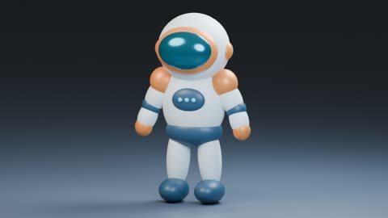

Test 06 · 挥手动作迁移：参考视频驱动 3D 角色
给 H3 Max 一段真人单手挥手视频和一张 3D 卡通宇航员图，要求角色复现视频里的动作和节奏。对照组只用宇航员图作首帧，动作用文字描述。
测什么、怎么测
输入视频 5.208 秒（Wikimedia Commons，CC BY-SA 4.0，裁成单人并去掉声音），请求 6 秒、768P，成对种子。动作在共有的 5.208 秒窗口里按八个时刻比较，片尾另记。

Prompt 原文
Create a high-quality 3D animated video featuring the astronaut character from Image 1. The character should reproduce the main body movements, arm gestures, and movement timing from Video 1. Preserve the astronaut's original costume design, proportions, helmet, colors, and overall visual identity. Translate the human motion naturally into the 3D character's body mechanics. Smooth character animation, physically plausible movement, consistent proportions, professional 3D animation quality.
汇总
| 条件 | 完成 | 实际规格 | 实测时长（秒） | 端到端（秒） | 单条估算（USD） |
|---|---|---|---|---|---|
| H3 Max · 参考视频 + 参考图 | 3／3 | 1344x768 @ 24 | 6.592 | 38–72 | 0.53 |
| H3 Max · 首帧 + 文字动作 | 3／3 | 1344x768 @ 24 | 6.592 | 69–107 | 0.53 |
结论与建议
- 角色造型保住了，动作没有迁移过去。参考组三条都保留了宇航员的颜色、头盔和比例，但都把真人的“单手挥动”变成了“双手举起”；第 2 条还在 5.2 秒前就把手放下了，和原片仍在挥手的节奏不符。
- 文字对照反而更像要求的动作。首帧加文字的三条都是单臂抬起再放下——不过它没有视频输入，谈不上动作迁移，只说明文字指令被执行了。
- 参考组还会自己加东西。第 1 条背景多了心形和星星，原图和 Prompt 都没有。
- 建议：在 Foundry 的 H3 Max 上，参考视频目前只能当“动作大致方向”的提示，不能指望逐帧复现手势和节奏；要严格的动作迁移，需要专门的 motion transfer / video-to-video 工具。
- 只看了十个时刻的姿态，没有做逐帧的动作相位和速度对比。
全部样片
第 1 对 · 参考视频 vs 文字动作
白色、蓝色面罩/腰部、橙色肩部和圆润比例保持，但新增心形/星星背景。0.125/0.750s双臂在侧，1.500s开始双手举起，之后至5.167s均为双臂动作；原片是单手挥动，侧边另一手保持下垂。共享窗口没保留主手势。片尾5.5/6.25s仍举双手。
下载原片0.125s手臂在侧，0.750–3.000s画面左侧单臂举起，另一臂保持下垂，3.750s已回到双手在侧。共享窗口内实现文字要求的抬一只手再放下；尾段5.5/6.25s静止站立。此对照没有输入动作视频，不能视为视频时序迁移成功。
下载原片第 2 对
角色造型和纯暗渐变背景保持。0.125s双臂在侧，0.750–3.750s双手举起，4.500s开始放低，5.167s双手已在腰侧；与输入单手持续挥动不符，也提前结束。尾段5.5/6.25s维持双手下放。
下载原片0.125s手臂在侧，0.750–3.750s画面左侧单臂举起，4.500s已放下。头部微倾、主体比例保持；符合文字单手动作然后放下，尾段5.5/6.25s手臂均在侧。未核实手腕逐次波动或人类动作精确时序。
下载原片第 3 对
角色造型、比例和暗背景保持；0.125s双臂在侧，0.750s抬起阶段，1.500–5.167s持续双手举起/轻度摆动，未转为输入真人的单手挥动。尾段5.5/6.25s仍举双手。
下载原片0.125s手臂在侧，0.750–3.000s画面左侧单臂举起，3.750s已放下。与文字的单手动作/收手相符，服装和背景稳定；尾段5.5/6.25s静止站立。
下载原片